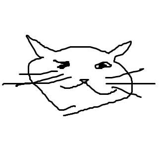

Welcome to the CSS page!
this is page CSSThis page is dedicated to CSS experiments
Here is a cute image of a cat
It was here because this page was otherwise just a blank canvas,
but i like this image so I will just leave it here, unharmed.

What is CSS for?
The css is for making "prettier" webpages.Just like "script" tag designates what's inside to be javascript code,
The "style" tag will tell the browser that what's inside is CSS code.
Notice how the link to the main page has different color? this is possible because of CSS.
So you can make some letters
Also, there is "id" that you can use inside the tag. Select using #[id name]
note that the id can only be used once.
see that dotted line above?
this is made possible by making a tag (whatever name you like, I chose "cutter")
remember there is a property called display which has several options, block and inline being two among them.
if you use javascript, you can do some
like i did on the image.
also, if we use @media on css, we can make the webpage a little bit more responsive. try this and that on this webpage to see what I mean.